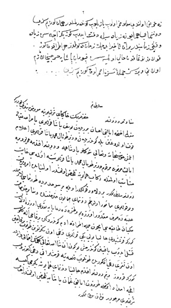

Belge 11: TKSA E.7002/50, veziriâzam telhîsi
Belge 11
Veziriâzam arzının özeti:
1. Ahıska eyâleti paşası Yusuf ölmüş yerine vezir Topal Osman Paşa öneriliyor.
2. Memur olduğum donanma hizmeti için elimden geleni yapıyorum.
3. Taşrada reâyaya zulüm yapan sekbanlardan yakaladıklarımızı donanmada kürekçi olarak kullanmaktayız.
4. Osman Paşa, donanma için yirmi bin kîse (iki milyon) akça yardım yapmıştır, kendisine Trabzon eyâleti valiliğini öneririm.
H. H. Emir:
“Ne ‘arz olundu ma’lûmumuz olub yazılub gönderilmişdir, hemân göreyim sizi donanma-yi hümâyûna ziyâdesiyle dikkat edüb gözünüz açasız ziyâde dikkati zamanıdır, bir an te’hir, idecek zaman değüldür, her etrâfdan göz kulakdan hâlî olmayasın, Kapudân Paşa’ya harcını, lâzım olanı veresiz, cümleten size ısmarladık, göreyim sizi.”
Yorum:
Çanakkale Boğazı’nı abluka eden Venedik donanmasını püskürtmek, Girit’e yardım yetiştirmek bu tarihlerde devletin en önemli sorunu idi.
1. Topal Mehmed Paşa kapudânlıkta tanınmıştır, 1657’de kapudân-i deryâ sıfatıyla Limni Adası’nı Venediklilerden geri alacaktır.
2. Donanma gemileri için kürekçi bulmak önemli bir sorundu. Reâyaya kürekçi akçası diye yeni bir vergi konulması sorun yaratmıştır. Toplanan para ile kürekçi toplanmaktadır. Kadırgalarda kürekçilik son derece güç bir hizmetti. Anadolu’da halkı soyan sekbanların suçlu sayılıp kürekçi yazıldığını göstermektedir.
3. Bir çeşit rüşvet olarak hazineye yardım karşılığı valiliklerin satılması bu dönemde geniş ölçüde uygulanıyordu. Osman Paşa donanma için hazineye bir milyon akça sağladığından Trabzon valiliğine atanmıştır.